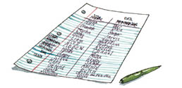
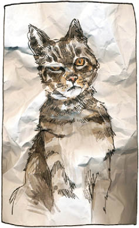
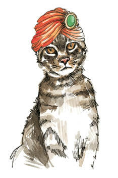

9
Hayvanlarla iletişim kursuna sadece birkaç kişinin gideceğini zannedebilirsiniz. Dört ya da beş kişi, hadi en fazla on.
Eh, yanılıyorsunuz.
Kaliforniya Marin County’deki büyük üniversite amfisinde, dersin başlamasını elli kişi hevesle bekliyordu.

Salon, akıtılan salyaların, kıpırdanan gövdelerin ve şıngırdayan metallerin sesiyle cıvıl cıvıldı. Bunun sebebi de otuz katılımcının asıl, canlı köpeklerini yanlarında getirmiş olmasıydı. Bu seslere kağıt hışırtıları karışıyordu; çünkü köpeksiz olanlarımız hayvanlarımızın ince kağıtlara basılmış fotoğraflarını sımsıkı tutuyorduk. Kucağımda, kocaman, ıslak uzaylı gözleri kısmen buruşmuş bir kafadan dışarı bakan iki boyutlu bir Tibby yatıyordu. Yanımda, hantal, siyah bir ternöv burnunu çekti, üzgün gözlerle bana baktı, sonra da yere uzandı.
Biliyorum, diye ona anlatmaya çalıştım. Aptal insanlar.
O gün sınıfa iki farklı yönümü getirmiştim. Şüpheci tarafım salondaki insanları saydı ve eğitmenin kazandığı parayı hesapladı. Hevesli tarafımsa Tibby’nin fotoğrafına bakarak ona, “Bu gece seninle biraz sohbet edeceğiz,” dedi.
Eğitmen bilim insanıydı. Hayvanlarla konuşma konusuna bilimsel olarak yaklaştığını söyledi. Bilimsel olarak, insan-hayvan iletişiminin herkesin haydi haydi becerebileceği bir şey olduğu sonucuna varmıştı.
“Bir hayvanla konuşmak için yalnızca sevgiyle niyet etmek ve bunu takip eden düşünceler gerekir,” dedi.
“Düşünceler en güçlü hallerinde resim biçiminde olur,” dedi.
“İletişime açık olmak ket vurulmamış bir zihin gerektirir,” dedi. “İşiniz filtrelemek değil; fark edip kayıt altına almak.”
“Aklınıza gelen ilk şey muhtemelen hayvanın ilettiği bir şeydir,” dedi.
“Bunu yapabilmek için, deli olduğumu düşündüğünüz gerçeğini bir tarafa bırakmanız gerekiyor,” dedi.
Sonra sorumuz olup olmadığını sordu. (Şüpheci, Hevesli’ye ağzının içinden “Deli misin?” diye sorup acımasızca güldü.) Evet, aslında sorusu olanlar vardı. Genç bir kadın elini kaldırdı. Kedisi kısa bir süre önce ölmüştü. Acaba onunla nasıl konuşabilirdi?
Eğitmen başını anlayışla sallayarak, “Ona bütün sorularınızı geçmiş zamanda sorun,” dedi.
Başka biri çakallarla konuşmakla ilgili bir şey sordu. Bir diğeri, kedisiyle köpeğinin birbirleriyle konuşup konuşamadığını öğrenmek istedi.
Eğitmen sonra yakınında duran bir beagle’ın üzerine eğildi, köpeği yerden kaptı ve bebek gibi kollarında tuttu. Hayvanın mahzun gözleri, kırçıllaşmaya başlamış bir burnu ve pes etmiş bir hali vardı. Eğitmen, kucağındakinin kendi köpeği olduğunu ve onunla konuşacağımızı söyledi; hepimiz öne doğru eğildik ki tek bir düşünce resmini bile kaçırmayalım.
Bundan sonra olanlar şöyle: Eğitmen beagle’a sevgi dalgaları gönderdi ve ona sorular sormak için izin istedi. Köpeğe bize kendisinden bahsetmesini söyledi. Yani kadının söylediğine göre, olanlar bunlardı. Benim oturduğum yerden, eğitmen yalnızca köpeğine gözlerini dikmiş bakıyor gibi görünüyordu. Çaktırmadan hayvanda pire arıyor bile olabilirdi.
Beagle’ın ilettiği bilgileri alacak ve not edecektik. Köpek dostumuzdan gelecek sözcükleri beklediğimiz sırada eğitmen, “Zihninizin sınırlarını kaldırın,” diye hatırlattı. “Unutmayın,” dedi. “Aklınıza gelen ilk şey muhtemelen ondan olacaktır.”
“Mahzun göz, yaşlı, halı, kuşkonmaz, brüksel lahanası, kırmızı ceket,” yazdım.
Bu ne demekti? Hiçbir fikrim yoktu. Bir gece önce kuşkonmazla brüksel lahanası pişirdiğimizi biliyordum. O gün giymeyi düşündüğüm kırmızı bir ceketim vardı. Evde de halılarımız. Aklıma gelenler beagle’ın gönderdiği bilgiler değil kendi hayatıma ilişkin şeyler olabilir miydi? Evet. O nedenle de eğitmen listemizi yüksek sesle okumamızı söylediğinde akıllılık edip çenemi tuttum.
İşte söylenenlerden bazıları:
Yemeği seviyor!
Dışarı çıkmayı seviyor!
Köpekleri seviyor!
Baş aşağı tutulmayı sevmiyor!
Eğitmen gözle görülür biçimde heyecanlandı.
Verandada takılıyor!
Çimenlikte takılıyor!
Başka köpeklerle oynuyor!
Eğitmen mutlulukla ellerini çırptı.
“HARİKAYDI!” dedi. “Her şey tam isabet.”
Şüpheci kendi kendine, “Gerçekten mi?” diye sordu. Yakınlarda, küçük, beyaz bir köpek aşağı yukarı dolanıyor, minicik pembe burnunu oraya buraya sürtüyordu. Üstündeki süveterin göğsünde pırıltılı harflerle “ŞIMARIK” yazılıydı. Şüpheci elini kaldırmaya çalıştı, bütün bunların, şey, köpeklerin hepsinin gösterdiği davranışlar olduğunu belirtecekti. Ama Hevesli ona oyunbozanlık etmemesini söyledi; Şüpheci de somurtarak suskun kaldı.
Artık kendi hayvanımızla konuşmamızın vakti gelmişti. Tibby’nin kucağımdaki iki boyutlu yüzüne baktım. Niyet ettim. Zihnimi açtım. Sevgi dalgaları gönderdim. Kendi kendime, cevapların çabucak ve kesinlikle geleceğini, büyük ihtimalle de çok tuhaf olacağını söyledim. Benim işim fark edip kayıt altına almak, diye düşündüm. Sonunda da sordum: Konuşabilir miyiz?

Bir süre Tibby yalnızca bana baktı. Kağıdın katlandığı kısımda, tek gözünün üstünde beyaz bir kırışıklık vardı.
Birdenbire beynime düşünceler akmaya başladı.
Tibby, “Wendy hep bizimle mi kalacak?” diye sordu. “Rahat koltuklardan bir tane daha alacak mıyız? Sakinleşecek misin?”
Bir düşünce resmiyle, “Kaygılı görünüyorsun. Gelecek konusunda. Geçmiş konusunda. Geçmişle gelecek neden bu kadar önemli ki?”
“Şey, bilemiyorum,” dedim. “İnsanların kaygılandıkları şeyler bunlar.”
Tibby, “Eh, insanlar epeyce salak,” diye cevap verdi.
ALINDIM diye bir düşünce resmi ekleyerek, “Hey,” dedim. “Bu insan on üç yıldır sana bakıyor ve seni besliyor.”
Tibby bunu duymazdan geldi. Cevap vermek yerine, “Ee, bu yaralar ne olacak?” diye sorduğunu duydum. “İyileşecek mi?”

İlgilenmesi içime dokunmuştu. “Biliyorsam ne olayım,” dedim.
Sessizlik.
“Hey, sınıf toparlanıyor. Artık gitmem gerek,” diye açıkladım.
Tibby, “Siz insanlar yok musunuz? Her zaman aceleniz var,” dedi. “Biliyor musun, bu yaralanma başına gelen en iyi şey olabilir.”
“Gerçekten mi?” diye sordum, ama Tibby çoktan gitmişti.
Eğitmen sınıfa, “Harika iş çıkardınız! Büyük bir başarı,” dedi, ama ben o kadar emin değildim. Gerçekten Tibby ile mi konuşmuştum, yoksa kendi kendimle mi?
O gece, gündüz öğrendiğim her şeyi devreye sokmaya çalışarak Tibby’nin gözlerinin içine baktım. Gözlerimi ona diktim. O da dik dik bana baktı.
Hiçbir şey olmadı.
Sonunda oyunumuzdan sıkılan Tibby başını patilerine dayayıp uykuya daldı.